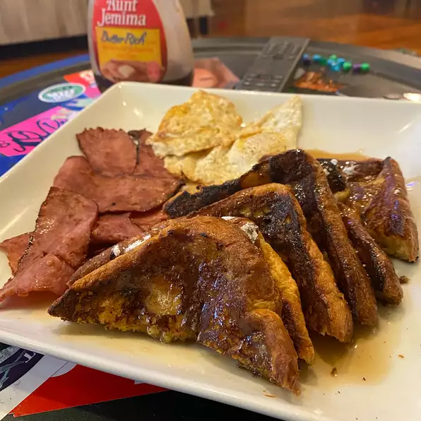

back to home
Brioche French Toast

Brioche like a french toast
Probably the best French toast ever. Finishing it in the oven ensures that even thick slices are not runny or underdone. Browned butter also adds a nutty, caramel twist to the usual maple goodness.
Ingredients:
- 1 ½ cups milk
- 4 eggs
- 1 teaspoon vanilla extract
- 1 teaspoon white sugar
- ½ teaspoon ground nutmeg
- 1 pinch salt
- 1 tablespoon butter, divided, or more as needed
- 6 (1 inch) thick slices dry brioche bread
- ¼ cup butter
- 6 tablespoons maple syrup, or more to taste
Steps:
- Preheat oven to 350 degrees F (175 degrees C).
- Whisk milk, eggs, vanilla extract, sugar, nutmeg, and salt together in a bowl.
- Heat 1 1/2 teaspoons butter in a skillet over medium heat. Working in batches, dip each slice of brioche bread in the egg mixture and cook in the hot butter until golden, 2 to 3 minutes per side, adding more butter as needed. Transfer French toast to a baking sheet.
- Bake in the preheated oven until puffed, 8 to 10 minutes.
- Cook and stir 1/4 cup butter in a skillet over medium-low heat until browned and toasty, 3 to 5 minutes. Transfer browned butter to a cold dish. Drizzle browned butter over baked French toast and top each slice with 1 tablespoon maple syrup.